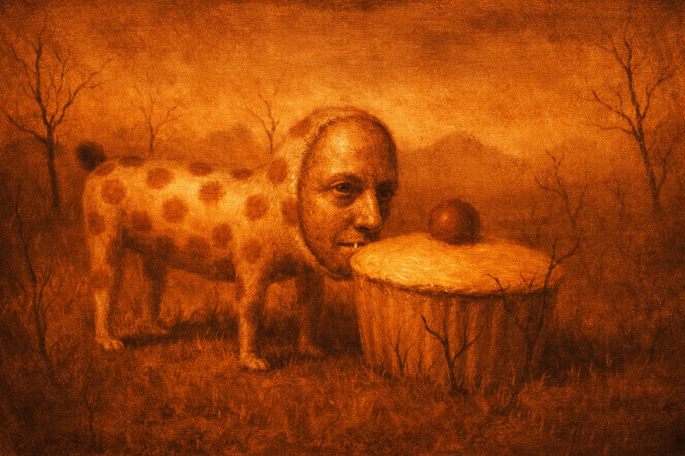
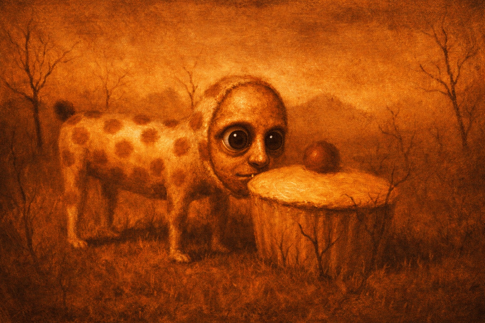
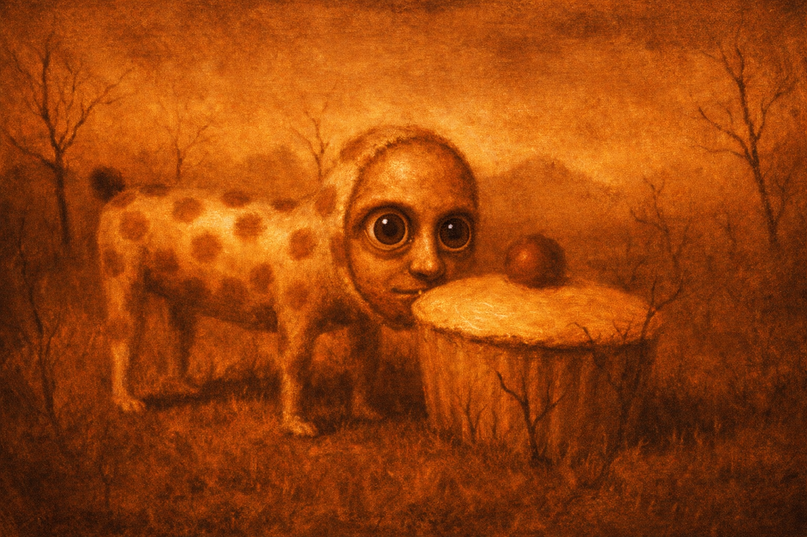
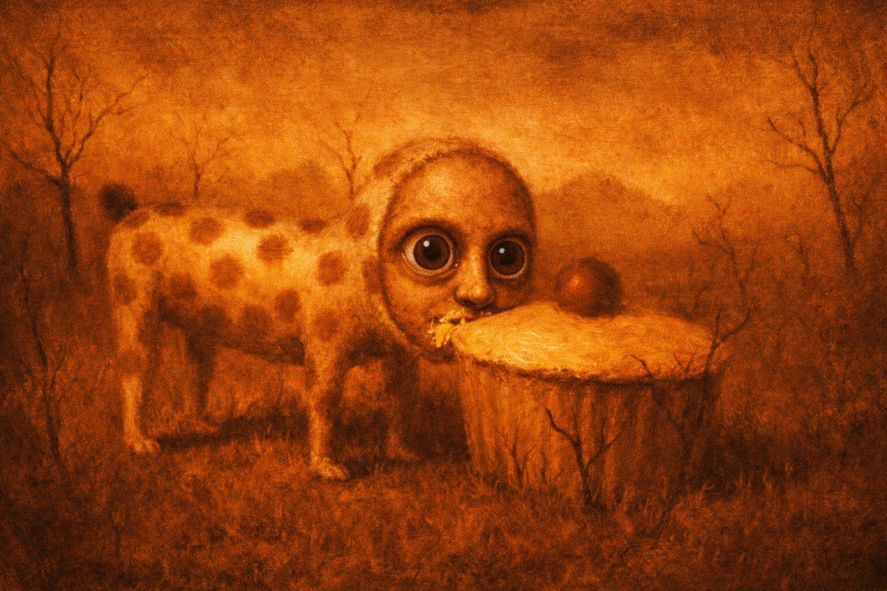

“Born of earth, shaped by flame, and carried on breath.”
The name Sienna comes from terra di Siena — the clay-rich soil of Tuscany, where iron and manganese oxide stain the land in ochres and burnt reds. But long before it colored canvas, it mirrored the skies of ancient Italy. In the aftermath of Rome’s great fires, the air would have swirled with smoke, casting the heavens in hues of raw and burnt sienna.
Spiro, from Latin spīrāre (“to breathe”) and spīra (Greek speîra, “coil”), evokes both life and motion — breath spiraling like smoke through time.
This project exists at that intersection: earth and air, pigment and pulse, history and abstraction.



